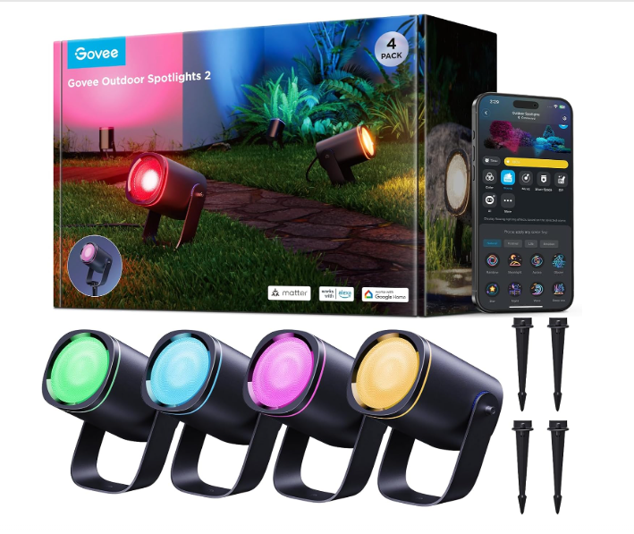

Govee Outdoor Spot Lights 2 Product Review
Four bright Matter-compatible landscape spots for about $140 sound like an easy Hue alternative. The harder question is whether the wiring and weatherproofing fit a permanent yard installation.
CONFIDENCE
QuietTrends may earn a commission when you purchase through links on this site. This helps support our research at no additional cost to you.
Executive Summary
Buy the Govee Outdoor Spot Lights 2 four-pack if you want vivid, app-controlled landscape lighting without buying a separate smart-lighting bridge, and your planned placement works with the kit's fixed cable layout. Compare first if the power connection will sit fully exposed to weather, you need long custom cable runs, or you want years of proven outdoor durability before installing a permanent system.
The lights themselves are the easy part. Measure the wiring route and protect the power connection before deciding where four spots belong.
The exact configuration reviewed here is model H7094/H7094111, ASIN B0DW7NZTYJ: four black aluminum RGBWIC spotlights rated at 700 lumens each, with Matter, Wi-Fi and Bluetooth connectivity, ground stakes and wall-mount capability. Manufacturer/listing data specifies IP67 protection for the outdoor light system and operation from -4°F to 104°F. Those are published specifications, not QuietTrends hands-on findings.
RECOMMENDED FOR
The strongest buyer wants architectural color and useful white light around a normal yard without turning landscape lighting into a contractor project.
- Homeowners lighting trees, planting beds, facades or patio features.
- Matter households using Alexa, Google Home or another compatible smart-home controller.
- Seasonal decorators who also want year-round warm or cool white landscape light.
- Buyers who prefer plug-in installation over a traditional low-voltage transformer and buried cable system.
Skip If
- Your four target locations cannot be reached by the supplied fixed cable layout.
- You need to splice or extend the system; the listing explicitly says it does not support either.
- Your only outlet leaves the power unit or connection exposed to standing water or an unsuitable receptacle.
- You need built-in motion sensing rather than schedules, scenes or smart-home automations.
- You prefer replaceable bulbs and field-serviceable landscape fixtures over an integrated LED system.
Price Reality Check
The four-pack has recently appeared around $139.99, with a higher list/MSRP figure around $170 and periodic promotional pricing below that. That puts each smart spotlight at roughly $35 before considering the shared power hardware.
At about $140, Govee is selling a complete smart-lighting effect, not premium landscape hardware one fixture at a time.
The economics look strongest against bridge-dependent smart landscape systems. Traditional low-voltage fixtures can be cheaper or more serviceable, but adding a transformer, smart control and color capability changes the comparison. Philips Hue remains the ecosystem benchmark; Govee's argument is more light and more effects for less money, with Matter reducing some of the platform lock-in.
Product Deep Dive
700 Lumens per Head Is Enough to Be Useful
Govee lists each H7094 spotlight at up to 700 lumens. That is substantial for accent lighting: enough to wash a small tree canopy, highlight masonry or illuminate a planting bed when aimed correctly.
- Four heads allow separate focal points rather than one broad flood.
- RGBWIC combines saturated color effects with useful white-light capability.
- Brightness at the surface depends heavily on distance, beam angle and what the light is reflecting from.
- A 700-lumen spotlight aimed poorly can look harsher than a dimmer fixture aimed well.
Buyer takeaway: plan the lighting effect before you plan the color scene. Placement does more for good landscape lighting than another app preset.
Matter Is the Most Important Smart-Home Upgrade
The second-generation lights support Matter in addition to Govee's own Wi-Fi/Bluetooth app control. That gives buyers a cleaner route into compatible smart-home platforms without requiring a proprietary lighting bridge.
- Use the Govee app for the deepest scene and RGBWIC controls.
- Use Matter for basic cross-platform smart-home integration and automations.
- Wi-Fi quality at the controller location still matters even when the lights are physically outdoors.
- Complex animated effects may remain easier to manage in Govee Home than through a general smart-home interface.
Buyer takeaway: Matter reduces ecosystem friction; it does not make the Govee app irrelevant.
The Cable Layout Can Decide the Installation
The listing explicitly says the four-pack does not support extension or splicing. That is a bigger constraint than it sounds when the four objects you want to illuminate are not evenly spaced.
QuietTrends analysis: before ordering, walk the route from the protected outlet to every planned spotlight position. Do not assume you can buy ordinary landscape-wire extensions later.
- Measure from the outlet, not from the first tree.
- Account for routing around beds, walkways and mower paths.
- Keep connectors accessible enough to inspect after storms.
- Do not bury components unless Govee explicitly approves that installation method.
IP67 Does Not Mean Every Component Can Sit Anywhere
Published listing material emphasizes IP67 weather resistance for the outdoor lighting system, while installation language also calls for a covered Class A GFCI-protected weatherproof receptacle. Independent owner discussion repeatedly treats the power connection as the part that deserves the most conservative placement.
That distinction matters. An IP rating on a light head is not permission to leave every electrical connection in a puddle. Follow the current manual and receptacle requirements, keep connections off low wet ground, and use an appropriate outdoor cover where required.
Real-World Ownership Check
Current owner evidence is large enough to identify recurring themes but not old enough to settle multi-year durability. Buyers consistently praise brightness, color, easy smart-home setup and the visual result. Negative reports cluster around early failures, flickering, fixed cable limitations and weather-exposed connection concerns.
- Setup: test all four lights indoors or in a dry staging area before committing stakes or wall screws.
- Planning: map cable lengths first; the inability to splice or extend can force a different layout.
- Network: verify reliable Wi-Fi at the controller location before hiding or securing cables.
- Weather: use a covered GFCI receptacle and keep the power connection protected according to the manual.
- Maintenance: periodically clean lenses, inspect cable jackets and connectors, and reposition stakes after soil movement or landscaping work.
- Deal breaker: repeated flicker, water intrusion or one dead head during the return period should be treated as a hardware problem, not something to solve with scenes or firmware.
What I Would Compare Next
- Philips Hue Lily: compare ecosystem polish, accessory availability and long-term platform maturity against Govee's lower cost and Matter support.
- Govee Outdoor Spot Lights 2 two-pack: compare if your layout needs only one tree or facade zone and four fixed-position heads would create cable clutter.
- Govee Outdoor Flood Lights 2: compare when broad wall washing matters more than focused beams on trees and architectural details.
- Traditional low-voltage LED spotlights: compare if serviceability, replaceable fixtures and custom cable runs matter more than RGB scenes and app control.
Buyer Signal Analysis
The H7094 has a stronger Amazon signal than its thin editorial footprint suggests. Current indexed marketplace data places the exact ASIN around the top 7,000 products in Tools & Home Improvement and roughly the top 40 in Landscape Spotlights, with more than 400 ratings. Earlier Amazon-market estimates also placed the four-pack around 672 monthly units, giving the product a meaningful sales baseline rather than a purely social-media signal.
Search coverage is comparatively light. Exact-product queries surface a small number of smart-home consensus pages, marketplace/listing pages, international resellers and community-derived analysis rather than a first page crowded with major current review publishers. That makes the practical installation questions—cable geometry, power protection, Matter behavior and long-term outdoor reliability—more useful than another feature recap.
Assimilated Signal Sources
- Manufacturer/listing data: supports model H7094, four 700-lumen heads, RGBWIC color, Matter, Wi-Fi/Bluetooth, IP67 positioning, aluminum housings, stakes/wall mounting and the no-extension/no-splicing limitation.
- Amazon-market data: identifies exact ASIN B0DW7NZTYJ, current category placement and a rating base above 400 reviews.
- Historical sales estimates: place the exact four-pack at roughly 672 monthly Amazon units in an earlier tracking period, supporting genuine buyer demand.
- Owner feedback: strongly favors brightness, color and smart setup while surfacing early-failure, flicker and cable-layout complaints that should be tested during the return window.
- QuietTrends analysis: the product's main risk is not whether smart colored spotlights look good; it is whether a fixed plug-in system can be installed cleanly and kept electrically protected in the buyer's actual yard.
Unanswered Buyer Questions
- How many H7094 systems remain fully reliable after two or three winters outdoors?
- Does Matter control remain stable when the yard sits near the edge of home Wi-Fi coverage?
- How often do owners discover the fixed cable geometry only after choosing their landscape positions?
- Are early failure reports concentrated in the power/controller hardware or individual light heads?
- Is the four-pack still the better value after adding weatherproof outlet protection or changing the planned cable route?
QuietTrends read: the Govee Outdoor Spot Lights 2 solve the fun part of smart landscape lighting very well. The buying decision belongs to the boring parts: outlet protection, cable reach, Wi-Fi and whether you are comfortable treating an integrated LED system as replace-on-failure hardware.
BUY AFTER A CABLE-ROUTE CHECK
Govee Outdoor Spot Lights 2 — 4 Pack
The H7094 four-pack combines useful 700-lumen output, strong color effects, Matter compatibility and a reasonable per-light price. Its Amazon category position shows real buyer interest, while the review gap leaves practical installation tradeoffs underexplained.
Final Buyer Guidance: Buy if four planned spotlight positions fit the supplied wiring and you have a properly protected outdoor power connection. Stage and test every head before permanent mounting. Compare Philips Hue when ecosystem maturity matters more than price, and conventional low-voltage lighting when custom cable runs and serviceability matter more than smart effects.
CHECK CURRENT PRICE ON AMAZON →